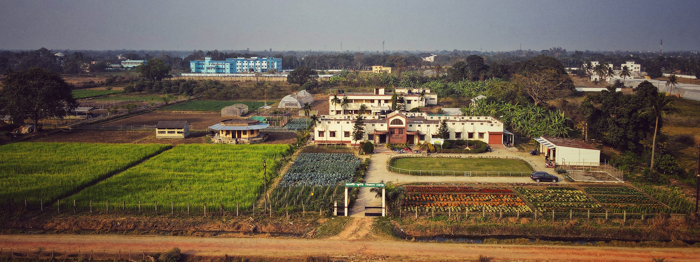

History
The Portuguese founded the town of Hooghly-Chuchura in 1579, but the district has thousands of years
of heritage as the city flourished as a trading port and some religious structures were built. One
such structure is a Christian church dedicated to a statue of Mary, brought by the Portuguese.
Click for more...
Click for more...
Places to visit
1. Dutch Cemetry
(Dutch Cemetry)
The Dutch Cemetery of Chinsurah was constructed on the order of the director of the Dutch East India
Company in Bengal. The cemetery and all its graves are now maintained and Archaeological Survey of
India under the protection of ancient monuments and archaeological sites and remains of national
importance.
Notable people buried here:
Charles Cameron (Scottish army officer)
Daniel Anthony Overbeek (The last resident of Dutch Bengal)
Notable people buried here:
Charles Cameron (Scottish army officer)
Daniel Anthony Overbeek (The last resident of Dutch Bengal)
2.Edwardian Clock Tower
(Edwardian Clock Tower)
EDWARDVS VII DEI GRA BRITT OMN REX which is the Latin abbreviation for Edward the Seventh, by the
Grace of God, King of All Britain Defender of the Faith. These are the inscription which people
often do not notice when the cross the small clock tower in Chinsurah. Most just simply call it the
“Ghorir More” (Clock Crossing) due to its presence at a four-point crossing.
Chinsurah was part of the East India Company and under the Dutch it was the Dutch East India Company. Once one of the jewels in the crown this small town had its good share of glorious past and one such example is the Edwardian Clock Tower that sits right in the middle of the road.
Chinsurah was part of the East India Company and under the Dutch it was the Dutch East India Company. Once one of the jewels in the crown this small town had its good share of glorious past and one such example is the Edwardian Clock Tower that sits right in the middle of the road.
3. Shandeswartala Temple
(Shandeswartala Temple)
Chinsurah had a number of temples dedicated to different gods and goddesses including Lord Shiva of
which the temple of Shandeswartala near the banks of the Hooghly river. It is not only the most
important but also the oldest among the temples of Chinsurah. It was said that the Shiva lingam was
installed by one Digambar Halder in the sixteenth century. Later a temple was established by
Siddheswar Roychowdhury. Much later the present beautiful temple was constructed.
This temple attracts a large number of pilgrims throughout the year and especially from the last day of the Bengali month of Chaitra (March-April) every year to the last day of Baisakh (April-May) when pouring the holy water of river Ganges on the lingam is regarded as “an act of great religious merit.
This temple attracts a large number of pilgrims throughout the year and especially from the last day of the Bengali month of Chaitra (March-April) every year to the last day of Baisakh (April-May) when pouring the holy water of river Ganges on the lingam is regarded as “an act of great religious merit.
4. Hooghly Imambara
(Hooghly Imambara)
Hooghly Imambara is a Shia Muslim congregation hall and mosque in Hooghly, West Bengal, India.The
construction of the building was started by Muhammad Mohsin in 1841 and completed in 1861.The
building is a two storied structure, with a tall clock tower over the entrance gate. The mosque has
intricate designs and texts from Quran engraved on the wall. The interior of the mosque is decorated
with marbles, candles and hanging lanterns.
Hooghly Imambara is famous for its vaunted clock. It is at the middle of the twin towers constructed on the doorway of the main entrance. Each tower, having a height of approximately 150 ft., takes 152 steps to reach its top. The clock has two dials with three bells having weight 80 mds, 40 mds and 30 mds. Smaller bells ring at an interval of 15 minutes and bigger bell rings to signify one hour. The clock requires two people to wind it for half an hour of each week, with a key weighing 20 kg. It was bought for Rs. 11,721 (in 1852) by Syed Keramat Ali from the manufacturer: M/s Black & Hurray Co., Big Ben,London.
Hooghly Imambara is famous for its vaunted clock. It is at the middle of the twin towers constructed on the doorway of the main entrance. Each tower, having a height of approximately 150 ft., takes 152 steps to reach its top. The clock has two dials with three bells having weight 80 mds, 40 mds and 30 mds. Smaller bells ring at an interval of 15 minutes and bigger bell rings to signify one hour. The clock requires two people to wind it for half an hour of each week, with a key weighing 20 kg. It was bought for Rs. 11,721 (in 1852) by Syed Keramat Ali from the manufacturer: M/s Black & Hurray Co., Big Ben,London.
5. Vande Mataram Bhawan
(Vande Mataram Bhawan)
The Vandematarm Bhawan is located in Chinsurah of Hooghly district. The house is sanctified with the
footsteps of Bankim Chandra Chattopadhyay. It is the birth place of the national song of
India-Vandemataram. Bankim Chandra Chattopadhyay was the first graduate of India and worked as a
Deputy Magistrate. He stayed at Joraghat on the banks of Ganga in the 1870s when he was the
Sub-Divisional officer in Hooghly. The Vandemataram song which was later included in his novel
Ananda Math was composed in this house and later on the song played a vital role in the Indian
Independence movement. Post independence of India, the song was recognized as the national song of
India.
The single storied house is built using bricks and facing the North on the banks of river Hooghly (Ganges).
The single storied house is built using bricks and facing the North on the banks of river Hooghly (Ganges).
6. St. John Armenian Church, Chinsurah
(St. John Armenian Church, Chinsura)
St. John the Baptist Church of Chinsura, is located in Chinsura, India. The church was built in
1695-1697 and is dedicated to St. John the Baptist. It is the second oldest Christian church in
Bengal, and the oldest Armenian church in India. The church is well preserved due to its proximity
to Kolkata and the care committee of the Armenian Churches.
The Armenian Church of Chinsura was started in 1699. A spire was added to the church in 1822, for which the Dutch resident of Bengal Daniel Anthony Overbeek laid the foundation stone. Each year on 13-14 January, the church celebrates the feast of John the Baptist, whose relics (bones of the left hand) are thought to be in the Armenian Church of Holy Nazareth, located 65 kilometers away, and delivered to the party in the Church Pilgrims. Armenians settled in Chinsura in 1645, after the Dutch, who formed their colony in 1625.On March 1, 2007, Catholicos of All Armenians Karekin II visited the church
The Armenian Church of Chinsura was started in 1699. A spire was added to the church in 1822, for which the Dutch resident of Bengal Daniel Anthony Overbeek laid the foundation stone. Each year on 13-14 January, the church celebrates the feast of John the Baptist, whose relics (bones of the left hand) are thought to be in the Armenian Church of Holy Nazareth, located 65 kilometers away, and delivered to the party in the Church Pilgrims. Armenians settled in Chinsura in 1645, after the Dutch, who formed their colony in 1625.On March 1, 2007, Catholicos of All Armenians Karekin II visited the church
7. Susanna Anna Maria's Tomb
(Susanna Anna Maria's Tomb)
Susanna Anna Maria Verkerk was a Dutch Lady of 18th century Chinsurah. Her first husband was Pieter
Brueys, a prominent merchant and a director of Dutch Administration. They had three children. Two
daughters - Susanna Jacoba and Maria Anna de Brueys and a son - Louis Adrian de Brueys. After the
death of Pieter Brueys in 1783, Susanna Anna Maria Brueys got married again, to Thomas Yeats, a
well-established Englishman of Colonial Bengal.
In 1805, four years before her death, she made a will giving all her possessions to her son Louis Adrian. Being married to two such affluent man, she inherited vast properties which include two houses - one beside the river, adjacent to Dutch Factory building and another at Taldanga, present day G T Road with sixty bighas of land attached with it called Ayesh Baag. Through her will she bequeathed Rs.4000 as a trust, the interest of which was to be applied to repair her own tomb and that of her two husbands. She died in 1809 and was buried in Ayesh Baag. Later on, under British rule, the property along with the land was sold in 1833, leaving only her tomb as the solitary structure.
Khadina More is a major 4 point in Chinsurah Town. It is the crossing of G T Road and Chinsurah Station Road. From Khadina more if you proceed towards Chandannagore along the G T Road, you will find the white temple like structure on your left, standing lonesome, within a vast field, surrounded by the walls - the MAUSOLEUM OF SUSANNA ANNA MARIA YEATS.
In 1805, four years before her death, she made a will giving all her possessions to her son Louis Adrian. Being married to two such affluent man, she inherited vast properties which include two houses - one beside the river, adjacent to Dutch Factory building and another at Taldanga, present day G T Road with sixty bighas of land attached with it called Ayesh Baag. Through her will she bequeathed Rs.4000 as a trust, the interest of which was to be applied to repair her own tomb and that of her two husbands. She died in 1809 and was buried in Ayesh Baag. Later on, under British rule, the property along with the land was sold in 1833, leaving only her tomb as the solitary structure.
Khadina More is a major 4 point in Chinsurah Town. It is the crossing of G T Road and Chinsurah Station Road. From Khadina more if you proceed towards Chandannagore along the G T Road, you will find the white temple like structure on your left, standing lonesome, within a vast field, surrounded by the walls - the MAUSOLEUM OF SUSANNA ANNA MARIA YEATS.
8. Chinsurah Rice Research Station

(Chinsurah Rice Research Station)
(Chinsurah Rice Research Station)
This rice research station was established in the
year 1965 under the Directorate of Agriculture,
Government of West Bengal. The objective of
this station is to identify varieties suitable for
irrigated and rainfed ecosystems.
More than 1200 germplasm are regularly being maintained, characterized and evaluated for better utilization and documentation.
Three hybrids (CNRH 103, 104 and 105) are in pipeline. Shatabdi A (a CMS line from Shatabdi) has been developed.
Aromatic entries IET 21261, IET 21549, IET 21845 and IET 21847 lines have average yield potential of 4.5 - 5.5 t/ha with slender grain and showed yield advantages of 20-35% over Basmati entries. The iron-rich rice varieties, Jayasilet, Chapakhushi and Seetabhog, having 4-5 times higher Fe content (40-50 mg/kg of polished rice) than the popular HYVs have been identified.
More than 1200 germplasm are regularly being maintained, characterized and evaluated for better utilization and documentation.
Three hybrids (CNRH 103, 104 and 105) are in pipeline. Shatabdi A (a CMS line from Shatabdi) has been developed.
Aromatic entries IET 21261, IET 21549, IET 21845 and IET 21847 lines have average yield potential of 4.5 - 5.5 t/ha with slender grain and showed yield advantages of 20-35% over Basmati entries. The iron-rich rice varieties, Jayasilet, Chapakhushi and Seetabhog, having 4-5 times higher Fe content (40-50 mg/kg of polished rice) than the popular HYVs have been identified.